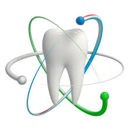

Who am I ?
My name is Paola Gudalupe Hernandez Verdin. I am a 15 year old from
the bay area. Growing up I've always wanted to have many different careers.
In elemantry school I always wanted to be a teacher, in middle school
I wanted to be a lawyer, but now that I am in high school, I want to be a dentist.
Why I choose this career?
This career draws my attention for the reason that, I want to cause an impact
in the children in my community. I want to cause an impact because I have
noticed that when little kids go to the docot or dentist they don't like it
and they are scared. I want to change that I want to be the one dentist that
kids look forward to and enjoy going to.
What Impacted My Career choice?
I have been going to the same dentist since I was 5 years old. I
really enjoy the dentist and look forward to going to the dentist
everytime. My dentist was always really nice and patient with me and one
time I had to go to a different dentist because of something that
happened to my tooth. Being with a different dentist helped me
realized that not all dentist are the same and some dentist treat
their patients really bad. This motivated me to be a dentist but to
work with younger kids.
